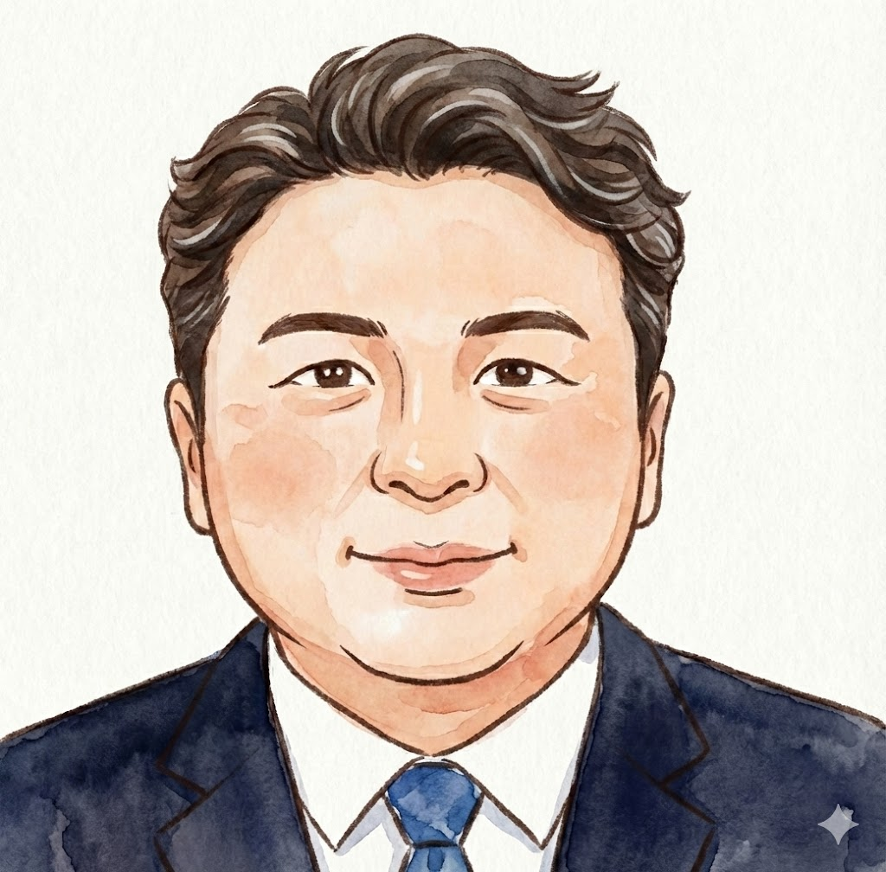
英語堪能な中山さんお客様も大好評！
大阪・京都・奈良
社員が考えたおすすめ観光コース
👇 各画像をクリックして詳細ルートをチェック！
Model Course
1日モデルコース
one day in大阪大阪発着
9:00
大阪出発（ホテル・指定場所までお迎え）
9:30〜11:30
大阪城公園
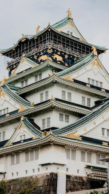
11:30〜14:30
通天閣＆新世界
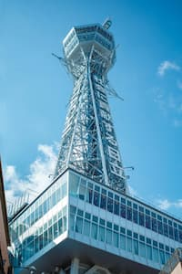
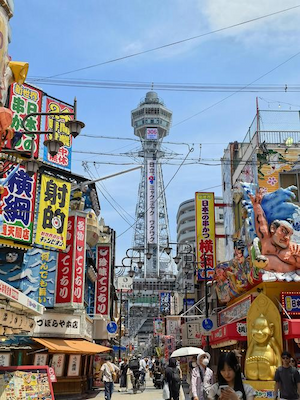
14:30〜15:00
四天王寺
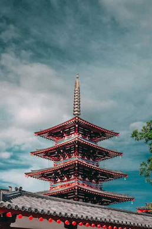
15:30〜17:30
海遊館
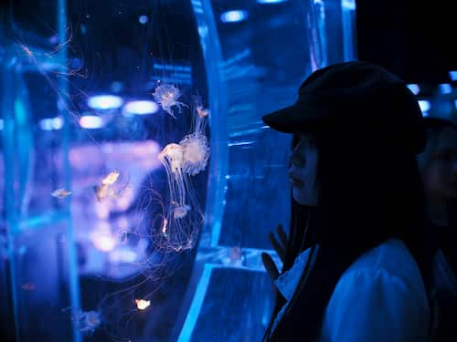
18:00〜19:00
道頓堀＆心斎橋
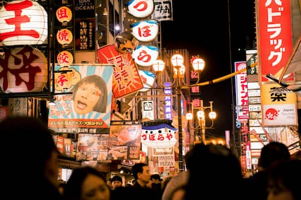
19:00〜 大阪のホテル・指定場所へ到着（現地解散して夜景を楽しむこともおすすめ）
金さんより大阪へようこそ！
「地元民しか知らない、行列のできない穴場グルメ」をお教えします。
渋滞を避けた最適なルートでご案内します。
one day in京都大阪発着
9:00〜10:30
大阪出発 → 京都へ移動（ホテル・指定場所までお迎え）

10:30〜12:00
伏見稲荷大社

ハイヤーで移動楽々〜
12:20〜15:00
清水寺
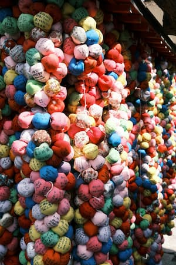
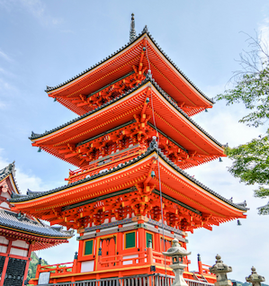
可愛いお店たくさん〜
15:40〜16:40
金閣寺
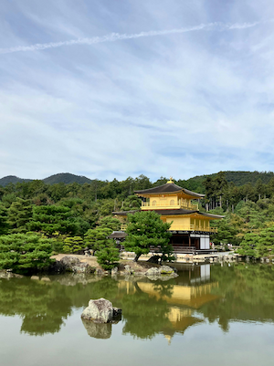
やはりすごい！
17:20〜18:00
祇園＆花見小路
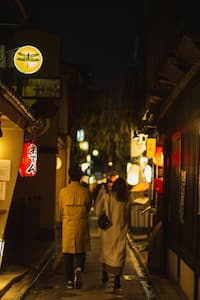
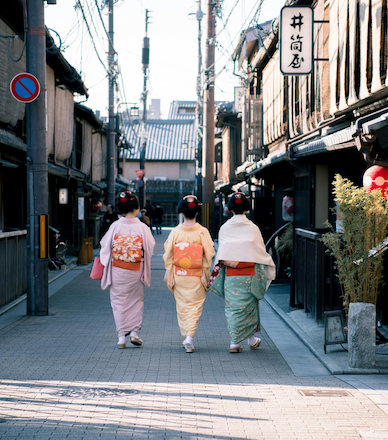
18:00〜 大阪へ戻り、ホテル・指定場所へ到着
中山さんより朝の京都もとてもおすすめです！
混雑をさけて、ゆっくり観光ができます。
ぜひ便利なハイヤーサービスをご利用ください！
one day in奈良大阪発着
9:00
大阪出発（ホテル・指定場所までお迎え）

10:00〜11:00
唐招提寺
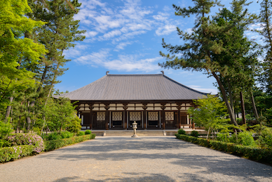
11:30〜15:30
奈良公園＆東大寺
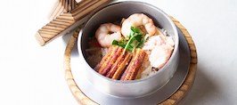
15:40〜16:30
春日大社
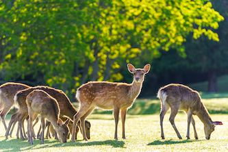
気をつけてね！
17:00〜17:40
若草山
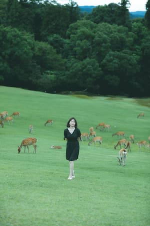
19:00〜 大阪のホテル・指定場所へ到着
王さんより午前（奈良）午後（宇治）
「大仏・シカ・抹茶」を1日で全部楽しむ、
関西の『いいとこ取り』ルートも大人気です！
ぜひ一度ご相談ください。

Contact Us
お問い合わせ
ご相談内容（日時／人数／行き先／お荷物）を
添えていただくとスムーズです。